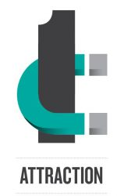
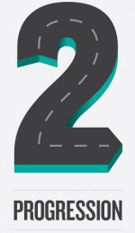
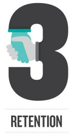

Working to ensure women and girls have the opportunity to achieve their full potential within STEM fields
The WBC launched two toolkits in 2018 which offer practical tools, template documents and evaluation metrics for large and small STEM business owners to make a positive difference for the recruitment, progression and retention of their female talent. These toolkits have been tested by large companies and offer best practice to the entire sector.
Download your toolkit on using gender diversity as a growth accelerator for your STEM business: Balance the System here.
Download your toolkit on inspiring young people in STEM and sharing best practice across your supply chain: Inspiring the next generation here.



Making adjustments to your recruitment process can help increase the % of female hires.

Implementing career development planning can increase the % of women promoted to senior roles.
